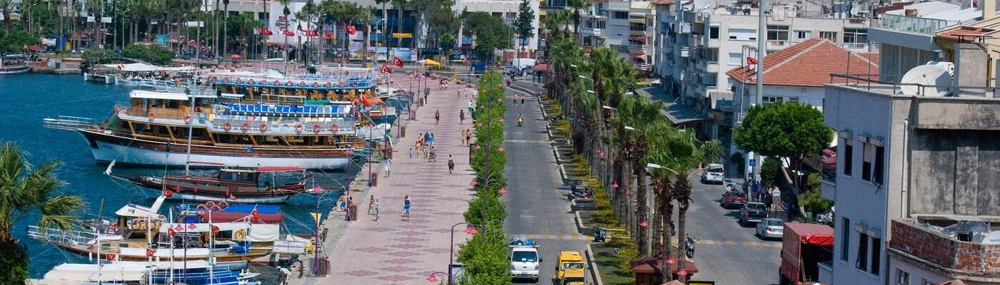

Здесь удачно сочетаются чистейшие воздух и вода и туристические развлечения. Кафешки, рестораны, клубы с шоу-программами — на каждом шагу по приморскому бульвару можно встретить что-нибудь интересное. В городе есть отличный аквапарк, а в тихих бухтах неподалеку созданы отличные условия для дайвинга.
Замок Мармарис. Замок упоминается в трудах греческого историка Геродота, который утверждает, что он был возведен за 3 тысячи лет до нашей эры (по альтернативным версиям в XI и VI веках до нашей эры). Облик сооружения оставался неизменным вплоть до VIII века. Во времена Сулеймана Великолепного его построили заново – именно эта версия и дошла до наших дней. Сегодня на территории замка находится музей с экспонатами античной и средневековой эпох.
Нетсель Марина. Морская гавань Мармариса, расположенная в центральной части города на территории природной бухты. Нетсель Марина – настоящий рай для яхт, она рассчитана на одновременную швартовку до 750 судов. Отсюда можно отправиться в морское путешествие по всему Средиземноморью, чем и пользуются любители яхтинга и туристы. В марине работают международные парусные школы.
Амфитеатр Античный амфитеатр, предположительно построенный в V–VI веках до нашей эры, который сохранился до наших дней в довольно хорошем состоянии благодаря тому, что его несколько раз реконструировали (последняя реставрация пришлась на 1970-е годы). Амфитеатр действует – на его территории проводят симфонические концерты. С 2005 года сооружение внесено в список Всемирного наследия ЮНЕСКО.